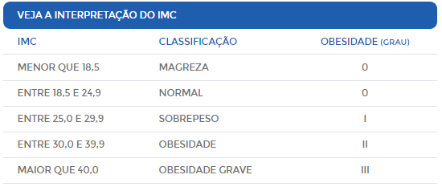

IMC é a sigla para Índice de Massa Corpórea, parâmetro adotado pela OMS para calcular o peso ideal de cada pessoa. O índice é calculado da seguinte maneira: divide-se o peso do paciente pela sua altura elevada ao quadrado. Diz-se que o indivíduo tem peso normal quando o resultado do IMC está entre 18,5 e 24,9.
Quer descobrir seu IMC? Insira seu peso e sua altura nos campos abaixo e compare com os índices da tabela.
